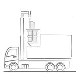
Automatic systems
Bilateral
Compatible with fully automatic bilateral collection systems.
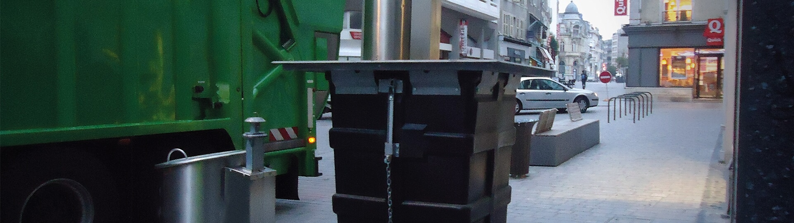
A compact underground system where the pedestrian platform and container move together, designed as a strong answer for top loading operations.
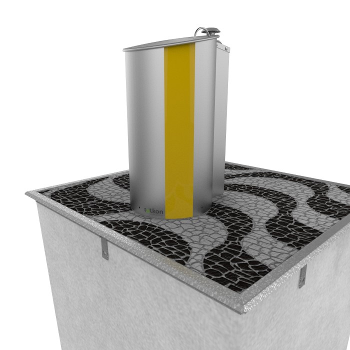
Product overview
The EVOS waste system consists of compact equipment where the pedestrian platform and the container move in solidarity. This system is the perfect answer for top loading systems.
By using a lighter plastic container, EVOS enables collection with less robust cranes and lower associated maintenance costs. The platform and container are controlled remotely, and waste unloads when the bottom of the container opens.
Collection methods

Compatible with fully automatic bilateral collection systems.

Prepared for top loading trucks and open-bottom container collection.
System components
Sotkon concrete bunkers are unitary. This allows maximum adaptation to the surrounding environment, placing containers individually or grouped as ecological islands.
The composition of the materials used in the bunker prevents water entry, allowing installation even in areas with high phreatic levels.
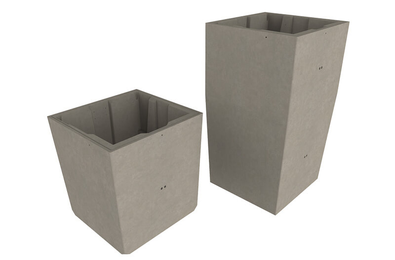
Concrete bunkerEvos containers are made of polyethylene and designed to provide exceptional strength. They are available in 3m³ and 5m³ capacities, ready for top loading with an open bottom.
The body has no metal parts in contact with waste, and handling components are made of hot-dip galvanized steel.
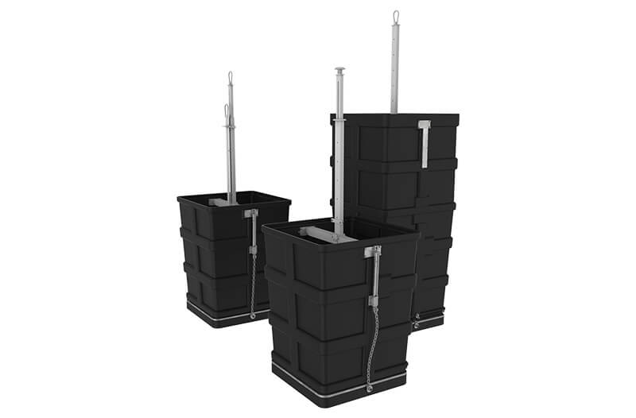
3m³ and 5m³ containerThe equipment has been developed to fit top loading trucks and all types of hooks on the market, including fully automatic bilateral systems.
The pedestrian platform and plastic container move together, and the waste is unloaded when the bottom of the container opens.
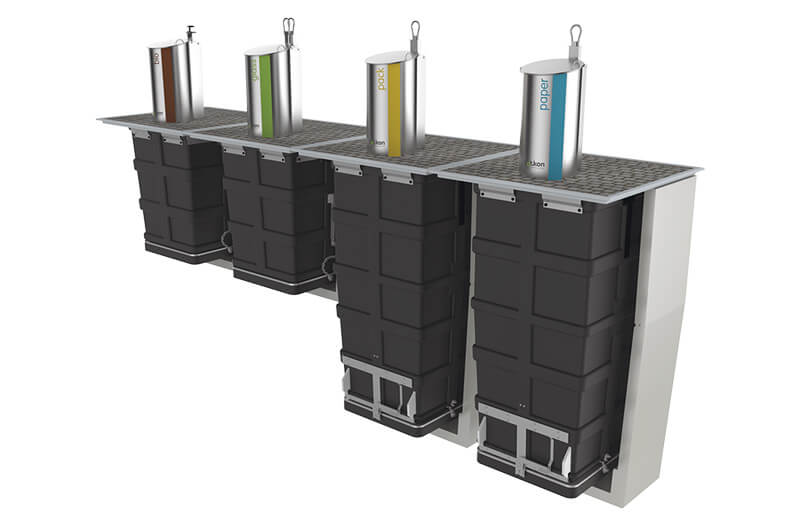
Sliced Evos hooksThe pedestrian platform is made of laminated steel plates, carefully treated to avoid corrosion in adverse conditions.
Its finishing allows full integration with the surroundings, making it suitable for many urban locations.
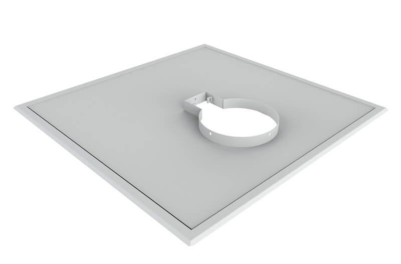
Pedestrian platformThe pedestrian platform is assembled in solidarity with the plastic container and uses a strong, stable fixation system.
The optional safety platform is certified according to EN13071-2, withstands 500 kg applied to any part of its surface, and rises automatically to street level when the container is removed.
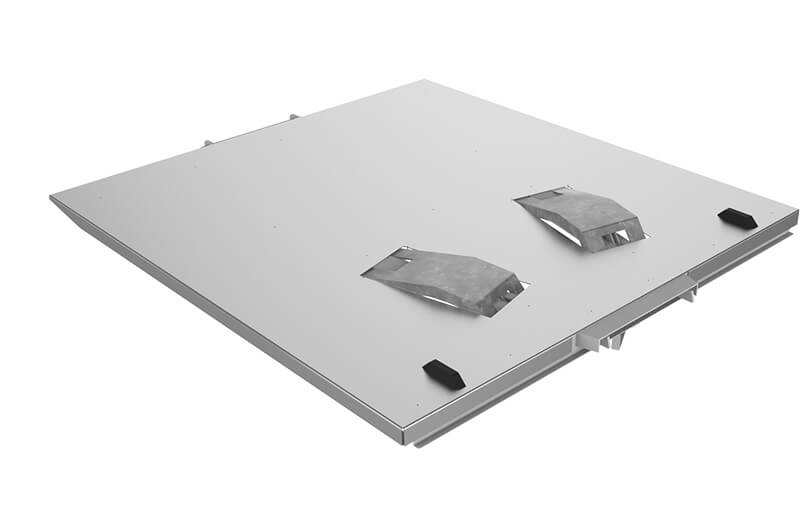
Safety platformSotkon waste disposal intake columns are designed to be ergonomic and visually attractive, with hygiene and safety considered in use.
They are made from stainless steel to withstand outdoor conditions while remaining attractive and functional.
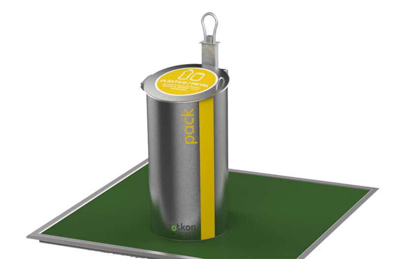
Intake columnSOTKIS intelligent waste management systems improve collection operations by making routes and access easier to control.
SOTKIS Level manages container filling levels to optimize collection routes, while SOTKIS Access supports charging according to the number of deposits and enables PAYT concepts.
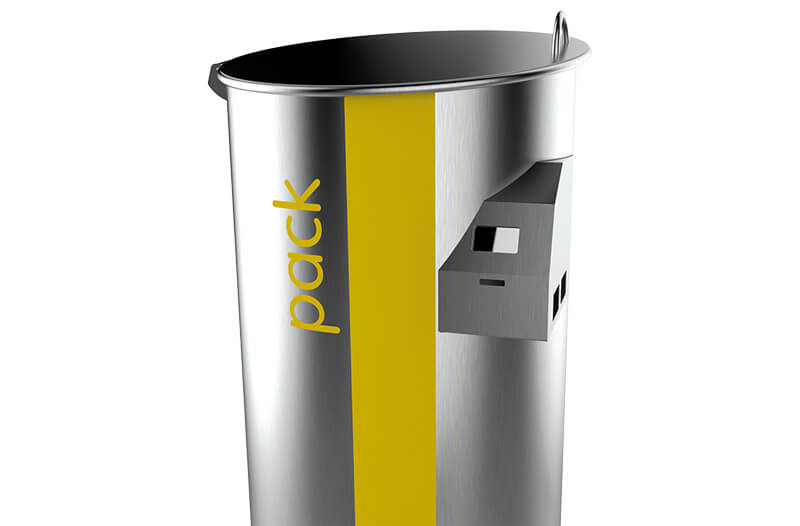
Ikon for smart citiesThe EVOS underground waste system can be adapted to different types of automatic loading, including a double-door bottom opening container.
This keeps the system aligned with the collection operation already used by each city.
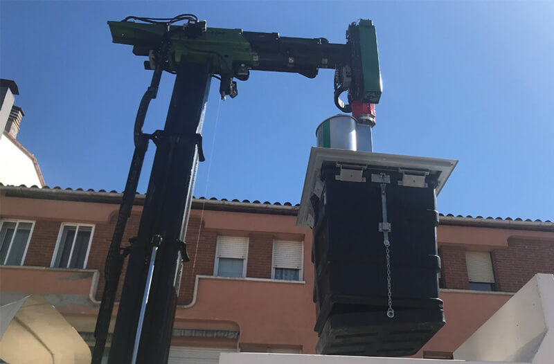
Mono operator bilateralTechnical dimensions
Preview 3m³ and 5m³ dimensions without making the page taller.
| Capacity | A | B | C | D |
|---|---|---|---|---|
| 3m³ | 1970 | 2970 | 1840 | 1860 |
| 5m³ | 3220 | 4220 | 1840 | 1860 |
Units in mm, approximate values. These measures do not apply for construction purposes.
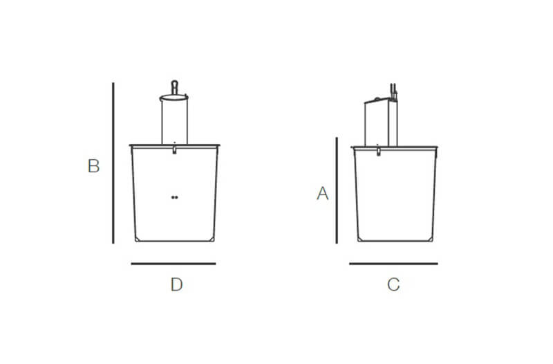